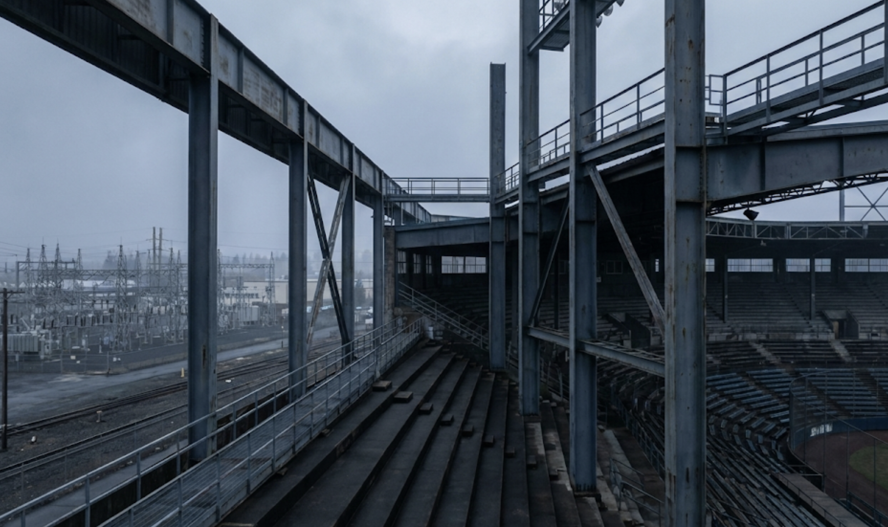

The Spokane Club
Beyond the Box Score
The Spokane Alloys are built around more than the baseball club itself. OGWA Stadium has become a gathering place for a distinctly Spokane mix of baseball, industrial design, music, custom machinery, and recurring events that give the club its own rhythm.
The team page remains the official baseball record. This club page is where the other parts of Spokane live: supporters, recurring entertainment, stadium traditions, special events, and the pieces of culture that have grown around the Alloys.
DONK
Resident Motorsports EventDONK
DONK is a separate competitive car-show league built around customized vehicles and head-to-head category battles. Drivers and builders compete across different judged classes rather than simply entering a traditional static car show.
Events build toward the league's top distinction: DONK SUPREME, the championship title awarded at the end of the competition cycle.
Spokane's relationship with DONK makes the series part of the Alloys' wider club culture without making it a baseball competition. DONK exists as its own league; OGWA Stadium is one of the places where the worlds intersect.
SONAR SYSTEM
Monthly Resident EntertainmentSONAR SYSTEM
SONAR SYSTEM is the Spokane Alloys' monthly resident musical act: a male-female two-piece built around drums, guitar, distortion, and the stripped-down force of a band with nowhere to hide.
The drummer handles the percussion side of the duo while the guitarist carries the melodic and abrasive edge. The sound sits naturally inside Spokane's heavier Northwest music tradition — raw, loud, minimal, and designed to work in a ballpark without turning into generic stadium entertainment.
Their monthly appearance is treated as part of the club calendar rather than a one-off concert booking, giving SONAR SYSTEM an ongoing place in the identity of the Alloys and OGWA Stadium.